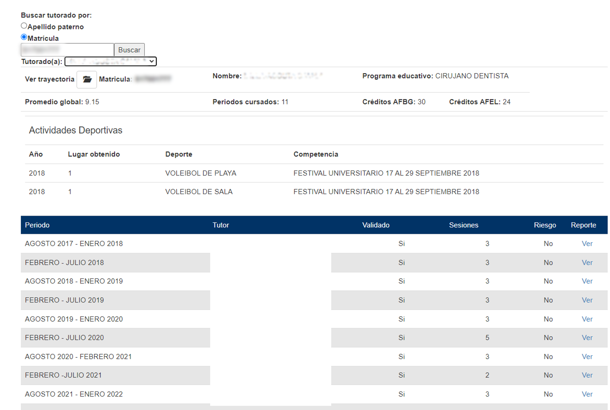
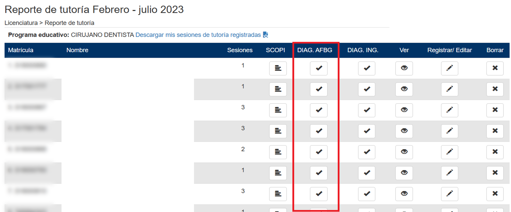

Universidad Veracruzana
Elaboración del Plan de Acción Tutorial
Fase 2: Herramientas y recursos de apoyo al Sistema Tutorial en la UV.

Elaboración del Plan de Acción Tutorial
Fase 2: Herramientas y recursos de apoyo al Sistema Tutorial en la UV.
Elaboración del Plan de Acción TutorialScroll
Fase 2: Herramientas y recursos de apoyo al Sistema Tutorial en la UV.
Información general
Desarrollo de los saberes de la Experiencia Educativa
Las coordinaciones de Sistemas Tutoriales cuentan para su consulta con diversos sistemas informáticos y recursos que se han desarrollado considerando la dispersión geográfica de nuestra Institución para apoyar las funciones de gestión y operación que se realizan por parte de cada una de las figuras que participan en la actividad tutorial. Estos sistemas informáticos concentran información escolar de los tutorados, así como la relacionada con el seguimiento que cada tutor académico realiza a sus respectivos tutorados. Asimismo, proporcionan datos sobre el desempeño de los tutores académicos y permiten que éstos se encuentren disponibles en tiempo real para ser consultados de acuerdo con su ámbito de autoridad y competencia por las diferentes figuras en cada programa educativo y región universitaria.
El propósito de estos desarrollos es proporcionar información oportuna para la toma de decisiones, de ello se desprende la importancia de mantener actualizados los registros de la atención tutorial a lo largo del periodo escolar, exhortando a los tutores académicos para que consulten de forma permanente los sistemas que comparten dicha información de sus respectivos tutorados.
El sistema principal desde el que se han integrado diversas consultas para el análisis de información escolar y el establecimiento de estrategias y acciones de intervención es el Sistema para Registro y Seguimiento de la Actividad Tutorial. Además de la información que es alimentada directamente por los tutores académicos, a través de este sistema se tiene acceso a información del Perfil de Ingreso (SCOPI), a los resultados del Examen Diagnóstico de Inglés, a los resultados del Examen Diagnóstico del Área de Formación Básica General (AFBG), al listado de estudiantes en riesgo académico acorde con los criterios establecidos por la Dirección General de Administración Escolar (DGAE) y a los estudiantes que no cuentan con tutor académico, entre otros.
A continuación, consulte el tipo de información que se puede obtener de cada
sistema, para ello haga clic en la pestaña correspondiente:
El Sistema de registro y seguimiento de la actividad tutorial tiene el objetivo de sistematizar la actividad tutorial en la Universidad Veracruzana para fines de indicadores y reportes institucionales, así como proveer al tutor académico de información escolar y académica como apoyo para la planeación y desarrollo de sus sesiones. El sistema de registro y seguimiento de la actividad tutorial fue desarrollado por la Coordinación Operativa del Sistema Tutorial en la Dirección General de Desarrollo Académico e Innovación Educativa y está dividido en niveles de estudios Profesional y de Posgrado. Así mismo, integra los siguientes módulos: Directivos, Coordinador de sistema tutorial, Tutor académico y Estudiante.
Características:
Para efecto de este curso, nos centraremos en el módulo del Coordinador de Sistema Tutorial, aunque también es importante señalar la importancia del Módulo de Directivos. El primero es un módulo de gestión para los coordinadores de Sistemas Tutoriales que permite publicar el Plan de Acción Tutorial (Programa de Trabajo de la Coordinación de Sistemas Tutoriales), mapa curricular, actas de Consejo Técnico que validen la actividad tutorial y los criterios de validación que establezca cada programa educativo. Además, permite la asignación y/o cambios de tutores, la validación de la tutoría académica y la realización de informes, consultas y constancias.
En el siguiente esquema puede ver la información contenida en el módulo de Coordinador de Sistema Tutorial. Haga clic en cada elemento del esquema para ver las cápsulas que explican la función de cada uno.
Dentro de los principales informes y consultas que se pueden realizar para integrar el diagnóstico del Plan de Acción tutorial se encuentran:
|
Informes |
Consultas |
|
Reportes por tutor y tutorado. Integran los hallazgos que los tutores reporten después de cada sesión de tutoría. Tutorados en riesgo. Señala los tutorados que de acuerdo con la percepción del tutor se encuentran en riesgo académico o con problemas de escolaridad. Algunos puntos que el tutor debió considerar para señalar a un estudiante en riesgo se pueden consultar en la siguiente tabla. Tutorados con cero sesiones. Muestra a los tutorados que de acuerdo con lo reportado por el tutor académico, no asistieron a las sesiones de tutoría durante el periodo. Con base en el Reglamento del Sistema Institucional de Tutorías, un estudiante que no asiste a dos sesiones durante el periodo, es candidato a baja de tutoría (Capítulo II, Artículo 17. Reglamento del Sistema Institucional de Tutorías). Evaluación del tutor (IAT) por tutor académico. Muestra los resultados de la evaluación de cada tutor académico en un periodo correspondiente. La calificación obtenida es equivalente al Índice de Atención Tutorial (IAT) y se presenta en una escala del 1 al 100. Es la evaluación por cada tutorado a través del Sistema de Evaluación al Desempeño Docente (SEDDUV) al término de cada periodo escolar. |
Este rubro permite al Coordinador del Sistema Tutorial hacer las siguientes consultas: Consulta por tutor. Estudiantes asignados, número de sesiones, indicador de validación, indicador de riesgo y reporte de tutoría a detalle. La información se muestra por periodo escolar. Consulta por tutorado. Permite buscar a los tutorados por su apellido paterno o su matrícula. Se muestra el historial de tutores académicos asignados, además de la siguiente información: •Promedio global. •Periodos cursados. •Créditos obtenidos en Área de Formación Básica General. •Créditos obtenidos en Área de Formación de Elección Libre. •Participación en actividades deportivas (deportes de competencia). En este punto es importante confirmar y ampliar la información sobre los tutorados en las reuniones con los tutores académicos. |
Además de dichos reportes, se pueden obtener los siguientes archivos en PDF: Lista de estudiantes de correo, Lista de estudiantes sin tutor y Lista de estudiantes en riesgo de acuerdo con las condiciones de la Dirección de Administración Escolar.
Para revisar la información completa, puede consultar el Manual del Coordinador de Sistema Tutorial.
El Módulo de Directivos es un módulo de consulta de indicadores institucionales que permite conocer a nivel de programa educativo, área académica y región, información sobre el número de tutores con tutorados asignados, el promedio de estudiantes atendidos por tutor, la cobertura en tutoría, el número de tutorados que no asisten a tutoría (reportados por su tutor) y el número de tutorados atendidos durante el periodo escolar. También permite realizar consultas por programa educativo, tutor y tutorado, así como obtener información sobre el desempeño del tutor académico.
Con esta información, y de acuerdo con su ámbito de competencia y responsabilidad, pueden consultar la información relacionada con la actividad tutorial desde el Rector y Secretario Académico, quienes tienen acceso a la información de todos los programas educativos en las diferentes regiones universitarias, hasta los Vicerrectores, Secretarios Académicos Regionales, Directores Generales de Área Académica, Directores y Secretarios de Facultad, Jefes de carrera, Directores Generales de Sistema de Enseñanza Abierta y Director General de la Universidad Veracruzana Intercultural.

[2]
Importante:
Este módulo se diseñó con el propósito de que las autoridades puedan dar seguimiento a las acciones tutoriales y hallazgos reportados por cada uno de los tutores académicos a través de la atención brindada en las sesiones de cada periodo escolar. La finalidad última es la toma de decisiones y definición de estrategias de intervención en un acto de responsabilidad compartida.
El Sistema de Consulta de Perfil de Ingreso (Scopi) es un mecanismo de consulta en línea desarrollado por la Universidad Veracruzana (UV), que permite conocer las características de los estudiantes que ingresan a esta máxima casa de estudios. El Scopi fue desarrollado por investigadores del Instituto de Investigaciones en Educación (IIE) y actualmente es administrado y gestionado desde el Centro de Investigación e Innovación en Educación Superior (CIIES) y la Dirección General de Administración Escolar.
La información contenida en este sistema fortalece la toma de decisiones, ya que presenta información sobre los resultados del alumno en el examen de ingreso, los recursos con los que cuenta, las habilidades, los conocimientos, las expectativas y el perfil de egreso de la preparatoria.
La información puede ser consultada por los Vicerrectores, Directores de Áreas Académicas, Directores de las facultades y, en el caso de los tutores académicos, se cuenta con un acceso desde el Sistema de Registro y seguimiento de la actividad tutorial a través del apartado de Reporte de tutoría, en donde sólo se requiere seleccionar el periodo escolar y posteriormente se puede hacer la consulta por tutorado para conocer la siguiente información:

El Examen Diagnóstico de Inglés en Línea (EDIL) es un conjunto de tres exámenes de inglés en línea diseñado únicamente para estudiantes de nuevo ingreso a la Universidad Veracruzana. Estos exámenes permiten conocer el nivel básico de inglés del alumno, ya que miden la capacidad lingüística respecto a las cuatro habilidades en el dominio de un idioma: expresión oral, expresión escrita, comprensión oral y comprensión escrita.
Al finalizar el diagnóstico, el EDIL ofrece al alumno una recomendación en función de los resultados obtenidos, ya sea para:
Los tutores pueden acceder a los resultados de cada uno de sus tutorados vigentes a través del sistema de registro y seguimiento de la actividad tutorial, apartado de Reporte de Tutoría. Los resultados permitirán orientar al tutorado y dar seguimiento. Asimismo, con el trabajo colegiado de los tutores académicos y el secretario de Facultad se puede integrar el estatus de los tutorados de nuevo ingreso que hayan presentado el examen para establecer las estrategias y acciones pertinentes.
El ingreso al examen es con el folio y contraseña del sistema de ingreso a la Universidad Veracruzana. En caso de contar con una certificación de lengua inglesa de cuatro habilidades, no se necesita presentar este examen.
En el siguiente portal puede consultar todos los detalles:
https://www.uv.mx/meifingles/examenes/edil-examen-diagnostico-de-ingles-en-linea/
El Examen Diagnóstico del Área de Formación Básica General es un examen en línea que realizan los estudiantes de nuevo ingreso, sirve para valorar el nivel de conocimientos y habilidades en las cinco experiencias educativas (materias) del Área de Formación Básica General. Si el alumno obtiene un porcentaje mayor a 80 puede ser candidato a presentar el examen de demostración de competencias.
La evaluación diagnóstica incluye un cuestionario sobre estilos de aprendizaje, una vez que el estudiante lo responde le brinda recomendaciones sobre la modalidad que se adapta más a su estilo de aprendizaje. El tutor puede consultar estos resultados desde el sistema de registro y seguimiento de la actividad tutorial en el apartado de Reporte de tutoría y orientar al tutorado sobre las mejores decisiones para acreditar el AFBG, tal y como se puede ver en la siguiente imagen.
Por lo anterior, es importante que el estudiante de nuevo ingreso la responda, considerando que no otorga una calificación ni valor en créditos, es gratuita y sólo está disponible por un tiempo determinado.
El tiempo aproximado para responderla es de 4 horas con 30 minutos, considerando el cuestionario de estilos de aprendizaje y el examen diagnóstico de inglés.
En el siguiente enlace se puede acceder al examen, el ingreso es con el folio y contraseña del Sistema de Ingreso a la Universidad Veracruzana (SIUV).
Evaluación diagnóstica AFBG (uv.mx)
Es un sistema institucional para la programación de la oferta académica con base en la trayectoria escolar de los alumnos y los recursos humanos y materiales disponibles. Es alimentado con la información de los estudiantes, a través de los tutores académicos, que son quienes orientan la trayectoria personalizada.
Asimismo, se vincula al Sistema Integral de Información Universitaria para integrar información sobre las trayectorias escolares de los estudiantes, tales como indicadores de aprobación, reprobación, avance y desempeño.
Dentro de la información que se puede consultar por generación se encuentra:
En su desarrollo e implementación colaboran diversas entidades académicas y administrativas que son coordinadas desde la Secretaría Académica. Para mayor información se puede consultar el siguiente enlace:
https://www.uv.mx/secretariaacademica/programacion-academica/
El ingreso es por mediio de la cuenta institucional a través del siguiente portal:
https://planea.uv.mx/trayectorias/
Además de la información que se concentra en el Sistema de registro y seguimiento de la actividad tutorial, también es importante contar con otras consultas que se generan con el apoyo de los secretarios de Facultad y a través de las reuniones con los tutores académicos y las academias por área de conocimiento, tales como:
Esta información le apoyará en la redacción de los siguientes aspectos del Diagnóstico del Plan de Acción Tutorial:
Actualmente, el rumbo de la Universidad Veracruzana está definida a partir del Plan General de Desarrollo y el Programa de Trabajo Estratégico en vigor, mismos que están alineados con el Programa Sectorial de Educación y los Objetivos de Desarrollo Sostenible. De ese modo, los objetivos, metas y acciones que se establecen en el Plan de Desarrollo Regional (PLADER), Plan de Desarrollo de Entidad Académica (PLADEA) y Plan de Desarrollo de Dependencias (PLADE) deben estar en congruencia con lo establecido a nivel institucional y nacional.
El cumplimiento de dichos objetivos, metas y acciones contribuyen al logro de las actividades sustantivas de la Institución. Por ello, es importante identificar en las metas y acciones establecidas en cada región y entidad académica, aquéllas relacionadas con la actividad tutorial, con el fin de considerarlas al momento de elaborar el programa de trabajo de la coordinación del Sistema Tutorial (Plan de Acción Tutorial).
Es necesario consultar el PLADEA de la entidad correspondiente, mismo que se encuentra publicado en el portal de las entidades académicas pertinentes y desde el siguiente espacio se concentran para su consulta:
A partir de lo establecido en el PLADER y PLADEA correspondiente, así como lo señalado en el PLADE de la Dirección General de Desarrollo Académico e Innovación Educativa, aunado al análisis de la situación escolar de los tutorados, se deben establecer los objetivos y acciones para la tutoría académica y la enseñanza tutorial en cada programa educativo.
A continuación, en el siguiente documento se han concentrado las metas establecidas para Tutoría en cada una de las regiones. Haga clic en el icono para visualizarlas:

Esta información le apoyará en la redacción de los siguientes apartados del Plan de Acción Tutorial:
1. Objetivos y acciones de Tutoría Académica.
2. Objetivos y acciones de Enseñanza Tutorial.
3. Participación y alcance del Sistema Tutorial en el PLADEA.
Como coordinador de Sistema Tutorial es importante conocer y ubicar los portales en los que se puede consultar la normatividad que rige las atribuciones y obligaciones de cada una de las figuras relacionadas con la actividad tutorial, así como los recursos de apoyo para llevar a cabo dichas funciones. Asimismo, los espacios en donde se puede consultar la información más relevante relacionada con los estudiantes.
Lea el siguiente recurso que contiene la información de los portales, visite y explore cada uno.
Es importante conocer la información contenida en los portales y considerarla tanto para su difusión como para los procesos de capacitación que se pueden gestionar para los tutores académicos de su programa educativo.
Esta información le apoyará en la redacción de los siguientes apartados del Plan de Acción Tutorial:
1. Datos generales.
2. Programación de sesiones de tutoría académica.
3. Guion de las sesiones.
4. Instancias de apoyo a estudiantes.
5. Acciones de difusión del Sistema Tutorial.
6. Acciones de formación y capacitación de tutores.
7. Agenda de reuniones con tutores.
Evidencias de desempeño
Fuentes de información
1 Elaboración de la Célula de Desarrollo de Experiencias Educativas de la Dirección General de Desarrollo e Innovación Educativa (DGDAIE).
2 Importante iconos creados por tastyicon - Flaticon. https://www.flaticon.es/icono-gratis/email_1981417